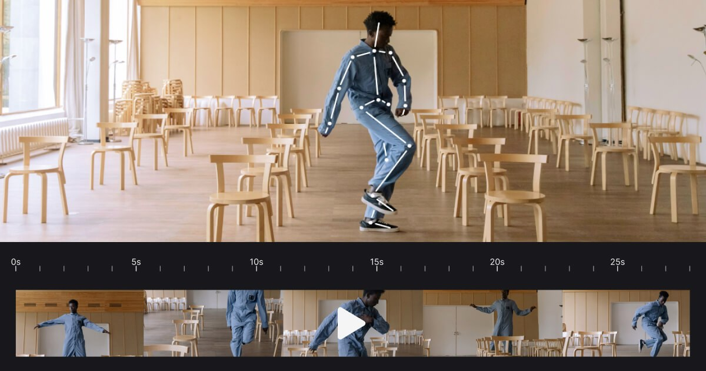

Rokoko Vision 3.0 重建單鏡頭 AI Mocap Solver，整合 Video/Text-to-Motion 與 Studio 清理
Vision 3.0 改用重建 solver，主打更乾淨動作、更快處理，並把 Video-to-Motion、Text-to-Motion、Studio 編輯、retarget 與 FBX/BVH export 串成同一套流程。

AI 動作 ★★★★★
完整分析
生成流程
單鏡頭影片進 Vision 3.0 後可進 Rokoko Studio cleanup/loop/retarget，再輸出 FBX/BVH 到 Blender、Maya、Unity 或 Unreal。
Production 價值
值得測的是 solver 重建後的 foot sliding、weight shift 與快速動作，而不是只比較 processing speed。
導入測試
用走跑跳、轉身與雙人遮擋片段做同素材 A/B，記錄 cleanup 分鐘數、腳底鎖定與 retarget 後曲線品質。